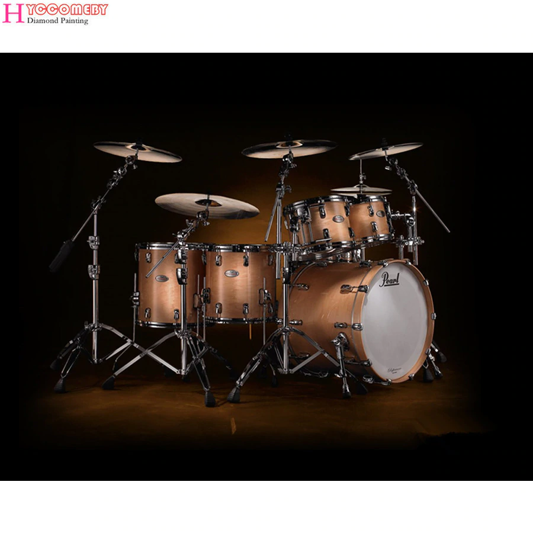

Anti UX
Drums:

A DRUM IS A WOODEN CYLINDER WITH PLASTIC SKINS ON EITHER END. WHEN THESE SKINS ARE HIT WITH A HAND OR A DRUM STICK, SOUND WAVES RESONATE INSIDE THE WOODEN CYLINDER. THESE SOUND WAVES VIBRATE THE WOODEN BODY AND CREATE SOUND WAVE THAT WE CAN HEAR. THERE ARE MANY DIFFERENT TYPES OF DRUMS, RANGING FROM HAND DRUMS, LIKE THE CONGAS, TO FULL DRUMSETS THAT INCLUDE CYMBALS, TOMS, SNARES, AND KICK DRUMS. SOME MODERN COMPETING DRUM COMPANIES ARE PEARL, DW, YAMAHA, AND GRETSCH.